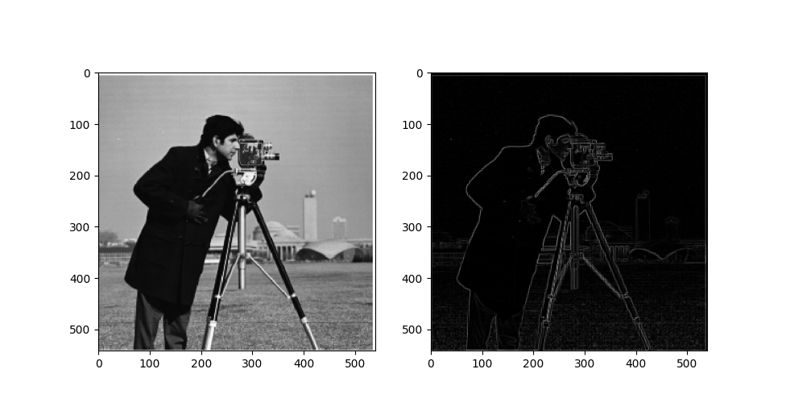
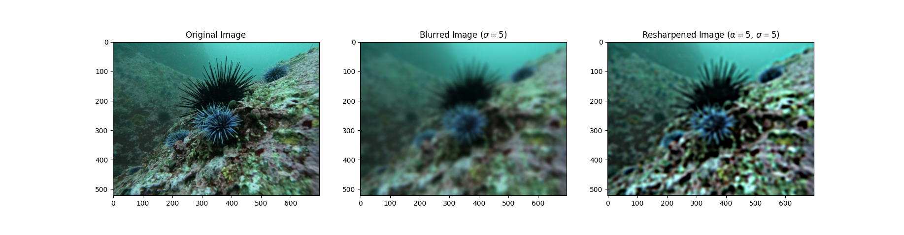

The finite difference operator represents taking the partial derivative of the image in the x and y direction. To find these partial derivatives, we convolve and its transpose with our image. As the difference in the value of two neighboring pixels increases, the magnitude of such partial derivatives increase as well. We take the magnitude of the computed gradient by taking the euclidean norm of the partial derivates in a length 2 vector at each pixel. Plotting yield the following image:

We can then extract edges from this image by thresholding the gradients. The underlying principle here is that when the gradients are large, there is usually an edge. We find a threshold that isolates the edges from the noise and the rest of the image experimentally to be the maximum of the gradient divided by 2.3.
However, when directly applying the finite difference operator to find edges, we run into the issue that noise, not just edges, results in high values for the gradient. It is therefore difficult to find a threshold where we filter out all noise without also dropping some of the edges. To solve this we can first apply a gaussian filter (with a 3px standard deviation) through convolution. As before, we can apply thresholding to isolate the edges. I used the same threshold as before (maximum gradient divided by 2.3).
Compared to the FDO by itself, this does a much better job at extracting the edges without including noise. Also, the extracted edges are thicker due to the convolution with the gaussian.
We can accomplish the same thing with one convolution over the input image by instead using the same gaussian convolved with our finite difference filters as our DOG filter. This yields the same result. We verify by subtracting the result we produced with two steps and checking the maximum pixel value is equal to 0.
When an image has more high frequency components, we perceive it as sharper. We can thus increase the perceived “sharpness” of an image by amplifying its high frequency components. To accomplish this we can blur an image by applying a gaussian filter. We then subtract this blurred version from the original image to isolate the high frequencies. We can then add these high frequencies to the original image to sharpen this. We can equivalently accomplish this with a single convolution by applying an unsharp mask filter. This filter is sum of th dirac delta function and a multiple of the difference between the dirac delta function and a gaussian.
u is the unsharp mask filter, e is the dirac delta function, g is a gaussian, and is a parameter controlling quantity of sharpness.
We apply this filter to the following images ( is the standard deviation of the gaussian kernel used). Parameters used derived qualitatively based on what I personally believed looked best while still demonstrating added sharpness.
Mathematically, we can see that increasing should create higher magnitude high frequency components and thus increase perceived sharpness. We can observe this impact qualitatively by plotting images with a sweep of values for
.
Finally, we can observe the limits of sharpening, by taking an image, blurring it, and then applying sharpening.

As you can see, while contrast of the resulting image is boosted, the final image is still blurred. This is because, while our sharpening algorithm amplifies high frequencies in an image, it cannot actually recovery any information that we lost by applying the low pass filter.
By playing with frequencies, we can create hybrid images that appear as one image from close up and a different image from far away. The underlying principle here is that from far away, you will mostly see the low frequency components of an image, but from close up you will mostly see the high frequency components of an image.
We can therefore combine images as so:
We apply this algorithm to some images:
We can see that while the first two examples work quite well, the last example is hard to see the low and high frequency components. This is likely due to the choice in source images. Everything recognizable in the image of the sea urchin falls into high frequency, so it is hard to make it visible when displayed in the low frequencies.
To better understand what is happening when we make these hybrid images, We plot the FFT at each step to see how the filters affect expression of given frequencies.
As you can see, in the original image the whole range of frequencies are expressed and in both images we see a large peak near 0. The low pass filter successfully isolates the low frequencies only, and the high pass filter greatly attenuates frequencies near 0. While the plot of the FFT of the high-passed image still looks gray at (0,0), the plot is on a log scale and the brightness at 0 is more than 5 orders of magnitude less than the original image, demonstrating that low frequencies are effectively attenuated. In the FFT of the final image, there is a new spot of higher magnitude near (0,0) from adding int the low frequencies from the other image.
A Gaussian stack is a series of images that we can derive from a source image where each subsequent image comes from applying a gaussian filter to the previous image. The first image is just the original. In this way we can form a stack where each subsequent image progressively bypasses a smaller range of low frequencies. In other terms, each image is more blurry than the last.
A Laplacian stack is similar in construction but each layer represents a range of frequencies. In other words, each layer represents a band pass filter of progressively smaller frequencies. We can construct such a Laplacian stack by subtracting the next layer from each layer in a Gaussian stack. The last layer is just the same as in the Gaussian stack since there is no next layer to subtract. By retaining this last layer, it is possible for us to recover the original image by taking the pixelwise sum of the entire stack. This allows us to do things like merge different frequency bands from multiple images with different masks and recombine each of the combined frequency bands into one image.
We construct such a stack on the images of an orange and and apple:
The first 3 rows represent layers 0, 2, and 4 of the Laplacian stack which represent high, medium, and low frequency components. The leftmost column are the masked Laplacian stack layers for the apple, the middle column has the masked stack layers for the orange, and the rightmost column has the combined stack layers. The mask at each layer comes from taking the gaussian stack of a predefined mask. That way the mask is blurred further and blends more gradually for lower frequency components of the images we are combining. The bottom row of this plot contains the sum of each Laplacian stack. By summing the stack we can recover the original image, or, in the case of the last column, recover a blended result where the mask is more gradual for lower frequencies.
Using the ideas of the Laplacian and Gaussian stack that we previously described, we can apply combine two images smoothly and with an arbitrary mask. We do so as follows:
By taking such a weighted average with a different mask at each level of the Laplacian stacks, we can create frequency dependent masking behaviour. Since we mask each layer of the Laplacian stacks using each layer of of a Gaussian stack of masks, we apply a more gradual blending at lower frequencies and a sharper blending at higher frequencies. This works because, to have a sharp final image, we need the high frequency details to be preserved. However, we dont need such sharp blending for the lower frequencies, and, in fact, applying a more gradual blending looks more natural. This method therefore successfully creates a natural and smooth blending while retaining high frequency details.
As in the Burt and Adelson paper we demonstrate mutliresolution blending by merging images of an apple and of an orange:
We can similarly merge two images of latte art.
This same process works with irregular masks as well:
We can the process of merging images occurs by visualizing the layers in the Laplacian stacks and their corresponding masks. This plot has the same layout as the plot described in part 2.3.